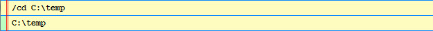

Shell commands are commands entered into and executed from the shell code editor that allow you to perform actions that control the shell environment in some way.
Shell commands can be freely intermixed with blocks of Python code within the code editor. To distinuish shell commands from Python code, each command must be entered on a separate line within the editor, start in column 1, and have the following form:
/command_name[?|-] [options]
where command_name is the name of the command and options is a string of data passed to the command as additional information about the action to be performed.
The actual form and content of options is command dependent. Some commands do not accept any options, while others may accept them but also have a default value if they are omitted. The description of each command specifies what the options, if any, for the command are.
A ? (plus) or - (minus) character may optionally immediately follow the command name with the following meaning:
The shell comes with a number of predefined commands which are described below:
This command changes the shell’s current working directory to the directory specified by the command’s options, which should either be an absolute path, or a path relative to the current working directory.
If no options are specified, the current working directory is not changed. In all cases the new current working directory is added to the history list.
Some examples:
/# Change to the parent of the current working directory:
/cd ..
/# Change to the examples subdirectory of the current working directory:
/cd ./examples
/# Change to the specified absolute directory:
/cd C:\temp
The last example should produce output like the following:
This command prints the result of dir( options ), where options should be a Python expression that evaluates to the object to perform the dir() on. If options is omitted, the current contents of the shell are displayed. For example:
/# Display all current shell symbols:
/dir
/# Display the contents of the HasFacets class:
/dir HasFacets
The last example should produce output similar to:
This command adds a file explorer view to the shell history using options as the root path. The options string may contain wildcard characters (e.g. *.py). If no options are specified, the current shell working directory is used as the root path.
Once the file explorer view is displayed, you can double-click directories or files in the view to make them available as standard shell history items.
Some examples:
/# Display all files starting from the current working directory:
/fx
/# Display all Facets UI demo Python source files:
/fx C:\Assembla\trunk\facets\extra\demo\ui\*py
The following figure shows an example of the file explorer in use:
This command lists all Python source (i.e. .py) files matching the command’s options, which should be a path to a directory containing Python source code. If no options are specified, then all Python source files in the current working directory are listed.
Some examples:
/# List all Python source files in the current working directory:
/l
/# List all Python source files in the examples subdirectory:
/l examples
An example of some typical command output is shown below:
This command lists all Python source files used in the implementation of the object specified in the command’s options, which should be a Python expression that evaluates to the object whose implementation is to be found.
For example:
/# List all files used in the implementation of the Tabbed class:
/li Tabbed
which produces the following result:
This command sets the level of detail for all items returned by other sub-commands executed at the same time as this one to the level of detail specified by options, which should have one of the following values:
The default is low.
For example:
[ i for i in range(200) ]
/lod
which produces the following result:

This command lists all files and directories matching the command’s options, which should be a path possibly containing wildcard characters such as ‘*’ and ‘?’. If no options are specified, then all file and directories in the current working directory are listed.
Some examples:
/# List all file and directories in the current working directory:
/ls
/# List all files with a .txt extension in the current working directory:
/ls *.txt
/# List all Python related files in the examples subdirectory:
/ls examples\*.py*
The following figure shows some typical output produced using this command-:
This command lists all of the most recently executed Python source files from most to least recently used. The command has no options.
For example:
/lx
which might produce output similar to the following:
This command turns on profiling for the remainder of the command execution. This command should proceed a Python expression or code block to be profiled.
When the command is completed, the profiling data is written to a file in the current working directory, and the name of the file is sent to the shell’s profile output to allow external tools, such as the ProfileViewer, to analyze and display the results.
See also the pp command for a similar command that prints the profiler results directly in the shell.
For example:
/p
for i in xrange( 1000 ):
do_something_to_be_profiled()
This command turns on profiling for the remainder of the command execution. This command should proceed a Python expression or code block to be profiled.
When the command is completed, the profiling data is written to a file in the current working directory, and then the results are analyzed and printed to the shell’s output. The name of the file is also sent to the shell’s profile output to allow external tools, such as the ProfileViewer, to analyze and display the results.
For example:
/pp
for i in xrange(1000):
print i
produces the following output:
This command displays the shell’s current working directory. It has no options. For example:
/pwd
might produce the following output:
This command displays the shell options view within the history list. It has no options. For example:
/o
results in the following display:
t - Execution Time Command
This command turns on execution timing for the remainder of the command execution. This command should proceed one or more Python expression or code blocks to be timed.
When the command is completed, the execution time for each separate block of Python code executed is displayed. You can use the no-op command (/#) to separate several blocks of Python code if desired.
For example:
/t items = [] for i in xrange( 100000 ): items.append( i ) /# items = [] for i in xrange( 1000000 ): items.append( i )would produce output similar to:

This command adds the default Facets view for the command’s options to the shell history.
The command’s options should be a Python expression that evaluates to a HasFacets object. The options can also specify an initial height for the view, using the form: object, height (e.g. myobject, 300).
For example:
from facets.extra.demo.ui.Graphics_and_Animation.Twixter import Twixter
/view Twixter(), 400
would produce output like the following:
This command executes the Python source file specified by the command’s options. The .py file extension is optional and may be omitted. For example:
/# Execute the mytest.py file:
/x mytest
/# Execute the C:\test\example.py file:
/x C:\test\example.py
This command displays only the visible items in the shell history which contain a case insensitive match of the search string specified by the command’s options. If no option string is specified, then all visible history items are displayed. For example:
/# Display only visible history items containing the string 'test':
/= test
/# Display all visible history items (i.e. removes any previous filter):
/=
This command shows or hides items in the shell history list based upon the options provided. If no options are specified, then all currently hidden history items are made visible again.
If specified, the options should be a string of the form: [+|-]types, where types can be a string containing zero, one or more of the following history item type codes:
If no types are specified, then all types are assumed.
The list of types may optionally be preceded by a + or - character. If + is specified, then only the currently visible history items matching types will remain visible; all other items will be hidden.
If a leading - is specified, then all currently visible history items matching types will be hidden; all other items will remain visible.
If no leading + or - is specified, + is assumed.
Some examples:
/# Show all currently hidden history items:
//
/# Show only the currently visible command items:
// +c
/# Hide all currently visible stderr output and exceptions items:
// -ex
This command has no options and performs no operation. It is in effect a comment and can be used to separate several blocks of Python code. This is useful, for example, when using the time command (/t) to display separate execution times for each block of Python code to be executed. For example:
/t
for i in xrange( 1000000 ):
do_something()
/#
for i in xrange( 1000000 ):
do_something_else()
This command has no options and simply prevents clearing the shell editor’s text buffer after a successful command execution. This can be useful when you are iteratively developing code, since it eliminates the need to keep retrieving the last version of the code back into the code editor.
For example:
# My really big shell project
# ...
# lots of python code you are working on
# ...
/~
should produce results similar to the following figure, which shows that the contents of the code editor have not been cleared after executing the command:
Note
It can be useful to use this command in conjunction with the history item creation status bar tool, which controls when new Command items get added to the history list.
This command displays information on how to use the VIP Shell. The command does not have a name. That is, the command is invoked whenever a slash not followed by a command name is invoked. It does take an option however, which is the the category of help information to be displayed. The possible values for the option are:
If no option is specified, a summary with links to the various help categories just described is displayed.
Some examples:
/# Display the shell help summary:
/
/# Display help information about the various shell commands:
/ commands
The output from the first example above should look like: